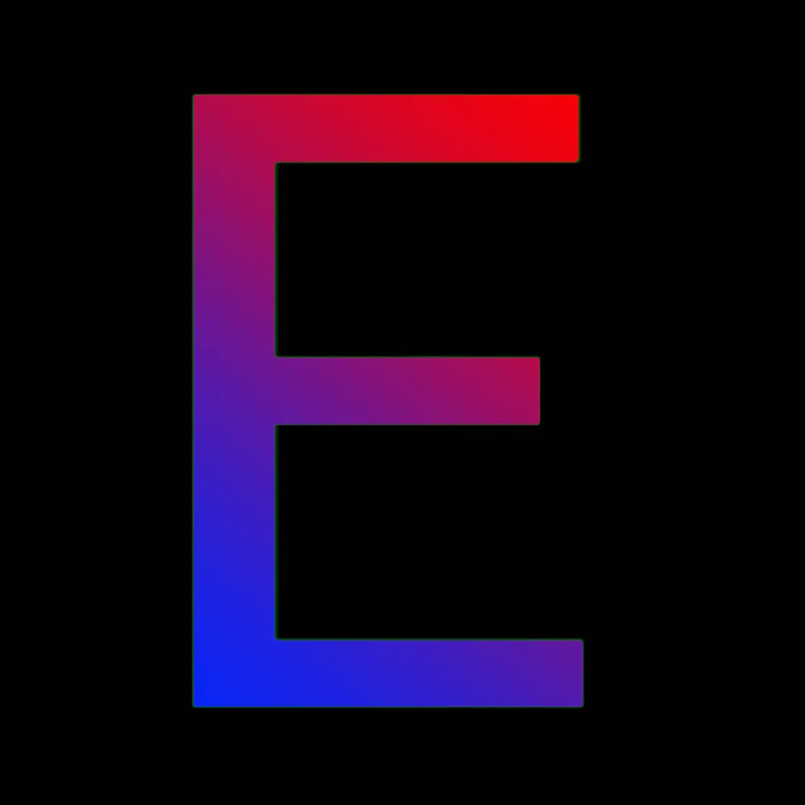

projects
these are all the projects i have made/collaborated on.

etheria client
etheria client is a 1.8 Minecraft Client made by @alarmingly_good on discord and other developers. (note: the website is not fully finished, but you still can go on and download the beta release.)
 KiwiOS
KiwiOS
KiwiOS is an OS built off of the LFS book. It has a clean custom KDE plasma desktop environment. Download currently unavailable.
 goodLoader
goodLoader
goodLoader is probably the most advanced bootloader to exist. its a mini OS that's purpose is to boot to primary OSes, or dual booting, but there will also be networking capabilities so you can download different OSes, as well as a partition manager and a file explorer.